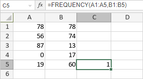

FREQUENCY funkcija
Funkcija FREQUENCY je jedna od statističkih funkcija. Koristi se za izračunavanje koliko često se vrednosti pojavljuju u izabranom opsegu ćelija i za prikaz prve vrednosti vraćenog vertikalnog niza brojeva.
Sintaksa
FREQUENCY(data_array, bins_array)
Funkcija FREQUENCY ima sledeće argumente:
| Argument | Opis |
|---|---|
| data_array | Izabrani opseg ćelija za koji želite da izračunate učestalosti. |
| bins_array | Izabrani opseg ćelija koji sadrži intervale u koje želite da grupišete vrednosti iz data_array. |
Napomene
Imajte u vidu da je ovo formula niza. Da biste saznali više, pročitajte članak Umetanje formula niza.
Kako primeniti funkciju FREQUENCY.
Primeri
Slika ispod prikazuje rezultat koji vraća funkcija FREQUENCY.
